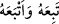
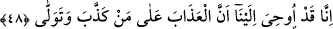

âfetlerden/belâlardan uzak olmaktır. “es-Selâm” kelimesi ile burada ya selâmlama ya da
selâmet kasdedilmiştir. Selâmlamanın kasdedilmesine göre mânâ şöyledir: ‘İki dünya
selâmetini hâsıl eden Allâh’ın, meleklerin, yâni cennet meleklerinin ve diğer
müslümanların selâmı, hidâyete uyanlaradır.’
Hidayete uyup tâbi olmak, Hakk’a götüren delilleri kabul edip tasdik etmektir. “
” ‘İzlerini takip etti’ demektir. Bu ise bazen cismen, bazen de peşine düşmek ve
örnek almak ile olur. Bu ikinci mânâda olmak üzere: “Her kim hidâyetime tâbi olursa
onlar için herhangi bir korku yoktur.” (el-Bakara, 2/38) buyrulmuştur.
et-Te’vîlât’ta der ki: “Teslim olan ve Allah Teâlâ’nın hidâyetine tâbi olan kurtuluşa
erer. Allah Teâlâ’nın hidâyeti ise peygamberlerinin getirdikleridir.
48. Hakikaten bize vahyolundu ki: (Peygamberleri) yalanlayan ve yüz
çevirenlere azâb edilecektir.
“Hakîkaten bize” Rabbimiz tarafından “vahyolundu ki:” Vahyin aslı hızlı işârettir.
Bazen Cebrâil’in lisânından gizli bir sözle, bazen de ilhâm ve uyku yoluyladır. Mûsâ
(a.s.)’a gelen vahiy Cebrâil vâsıtasıyla, Hârun (a.s.)’a ise Cebrâil ve Mûsâ (a.s.)
vâsıtasıyladır.
Peygamberleri “yalanlayan ve yüz çevirenlere azâb edilecektir.” Âyette geçen azâb,
selâmetin karşılığı olarak dünyevî ve uhrevî bütün ve devamlı azâb demektir. Çünkü
sona eren azâb sanki azâb değildir. Şu halde başkaları da azab görecek olmalarına
rağmen azâbın sâdece yalanlayanlara hasredileceği söylenemez.
“Yalanlayanlar”dan maksad, Allâh’ın âyetlerini yalanlayan ve peygamberlerin
getirdiklerini inkâr eden kimselerdir. Yalan hem sözle hem de fiille olabilir. “Yüz
çevirenler” ise hevâ ve hevese uyarak âyetleri kabulden yüz çevirenlerdir. Bu ifâdede
hem taltif hem tehdid vardır. Çünkü bundan fazlasıyla azâbın ona ulaşacağı tasrih
edilmemiştir.
Fakir (Bursevî) der ki: Zâhiri ve hakîkati yalanlamanın her ikisi de mutlak olarak
azaba ve horlanmaya sebeptir. Şerîatı inkar edenler, hem onun şeklini hem de hakîkatini
inkâr etmiş olurlar. Onlar hem cismânî hem de rûhânî azâbı çekeceklerdir. Hakîkati
inkâr edenler ise hakîkî âyetleri inkâr edenlerdir. Onlar için de mânevî horlanma vardır.
Nimetler ve yücelik, itâatte, tâbi olmakta ve teslimiyettedir. Nitekim cehennem ateşi ve
alçaklık da bunların tersindedir.
Hikâye edilir ki seyyidlerden birisi Abdullah b. Mübârek’in halk yanındaki yüksek
mevki ve makamını görünce: “Bir Muhammed (s.a.)’in soyundan gelenlere, bir de şu İbn
Mübarek’in yüksek mevkiine bakın.” dedi. İbn Mübârek ona şöyle cevap verdi:
“Seyyidimiz dedesinin sünnetine uymadığı için zelil oldu, İbn Mübarek ise Nebi (a.s.)’a